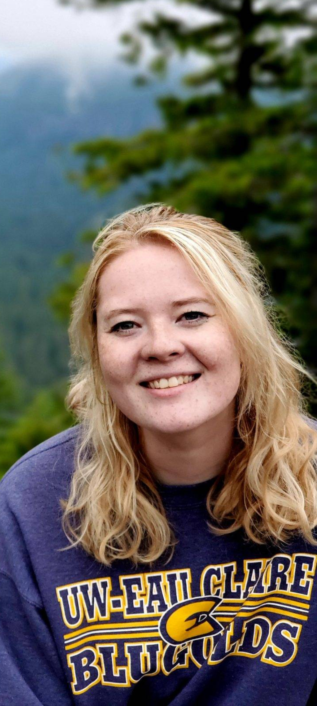
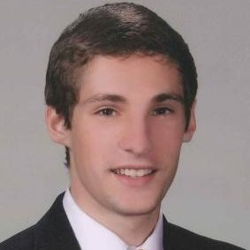
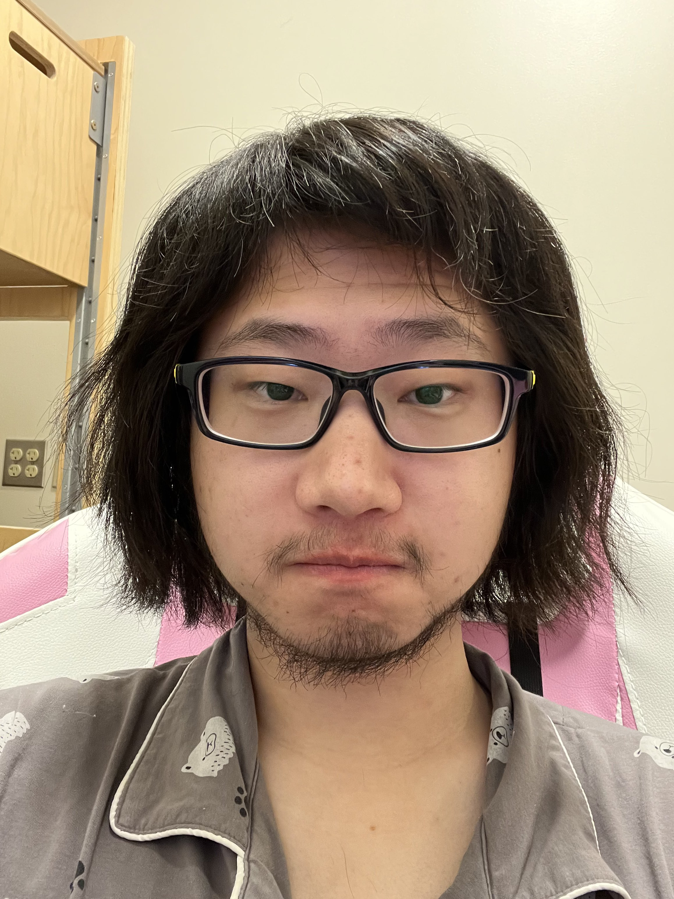
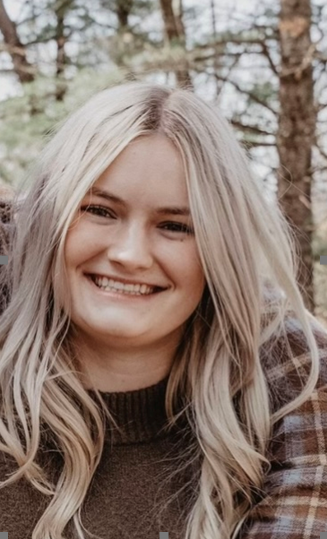

Students

My students assisting the UWEC computer science program.
Past Students
Connor Kamrowski

Connor Kamrowski enjoys video games, playing music on trombone and guitar, and going on hikes. He is from the Appleton area in Wisconsin. He is looking forward to joining the computer science industry and learning more about machine learning as life goes on.
Connor McKeown

Connor McKeown is from Eagan, Minnesota which is just south of the Twin Cities. In hid free time, he enjoys playing guitar, cribbage, and ultimate frisbee. After college, he hopes to gain experience in the industry and gain enough knowledge to start his own business in tech.
Lany Ruehmann
Laney is a double major in geography and American Indian Studies from a small town in Wisconsin called Cochrane. She is planning to pursue further education in forest and fire management with applications in GISystems once she graduates from UW-Eau Claire. When she is not in school or geeking out over maps, she is outside playing with her dog, riding motorcycles and dirtbikes, or camping.
Jordan Langlois
Jordan Langlois is from Altoona, WI. His hobbies include coding, video games, and traveling. His future goals for his career include working in software development related to Computer Vision.
Keller Paige
Paige Keller is from Crystal Lake, Illinois. She is majoring in computer science with the hope of becoming a software developer in the future. She is on the UWEC Womens basketball team, so a lot of her time is spent in the gym. However, when she is not in the gym, she loves to spend time with friends or try new coffee places.
Ashleigh Kroschel

Ashleigh is a biology major with a psychology minor. In her free time she like to crochet, knit, play the piano, and hangout with friends. Her future goals are to one day travel the world and to have a job that keeps her outside.
Zhongyue Yu
Zhongyue Yu, an international student from China. His major is Computer Science and he's a senior in UWEC. Instructed by Dr. Gomes, he's a member in the GIS Hyperspectral research team. (Yu loves video games, anime and music. He can play guitar and piano. Mean while finding and solving problems in coding is also his interest.)
Kaia Hansen
Kaia Hansen is from Grafton, Wisconsin. Her hobbies include reading, having fun with friends, and developing new websites in her free time. One day, she would like to teach computer science because having a solid starting foundation in CS is very important, and she would like to change the way it is introduced.